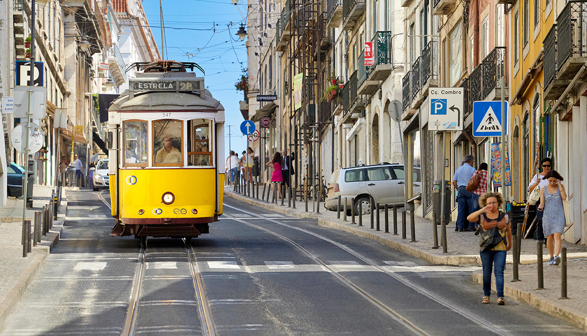
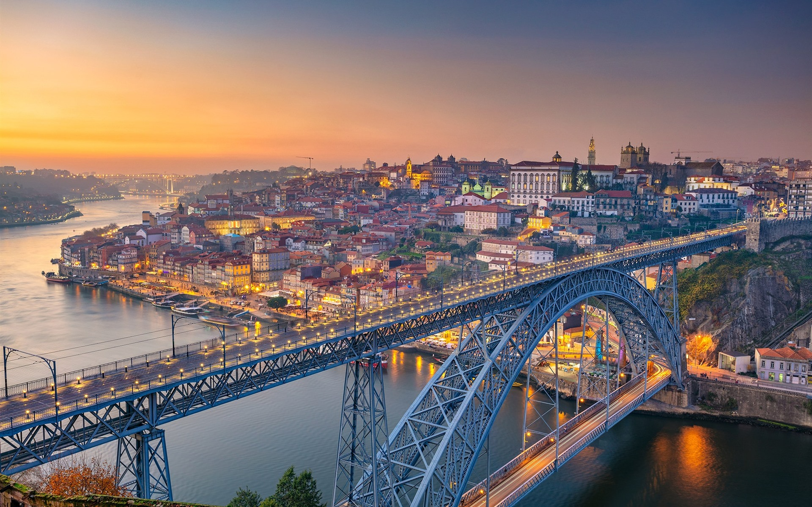
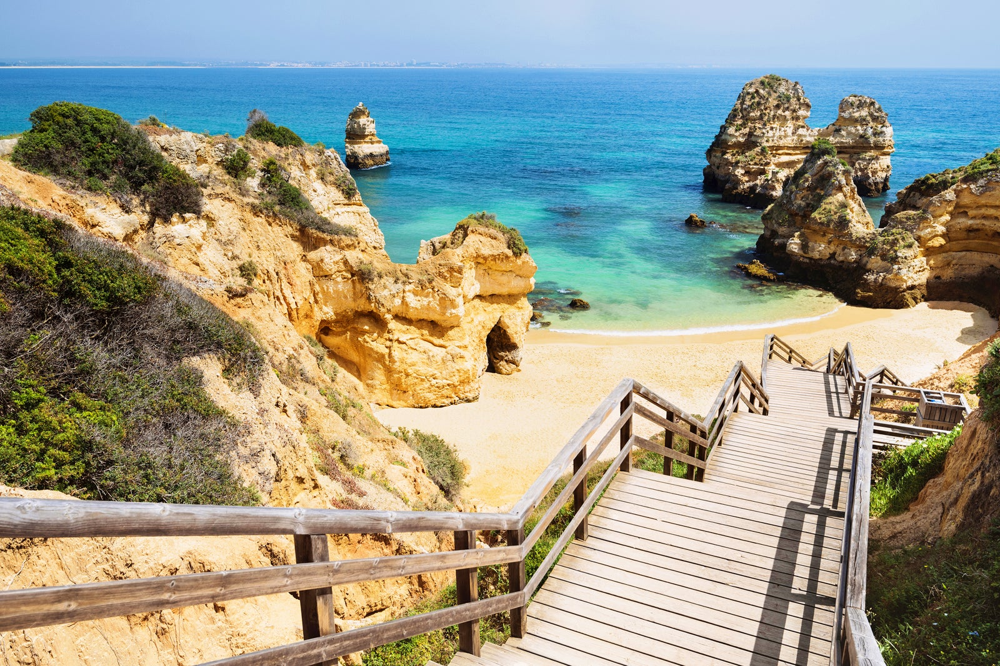

The Ultimate Trip To Portugal
Lisbon
Often compared to San Francisco for its huge suspension bridge, yellow trams,
and steep hillside streets, Lisbon is nothing short of spectacular.
Porto
especially for first-time visitors. Located along the Douro River, Porto’s historical center
is an UNESCO World Heritage Site. The city is characterized by hilly cobblestone streets,
centuries-old churches, and beautiful azulejo tiles. Wrought with detail,
Porto is a city that begs to be explored on foot.
Most Beautiful
Beaches
in Portugal

in the Algarve. The cliffs provide shelter from the sun and wind.
It’s one of the more popular beaches in the area thanks to its proximity to the roads
and hotels of Lagos (2.5km), so visit out of season to appreciate its true beauty.
Other beaches to visit:
- Praia do Camilo
- Praia de Miramar
- Praia do Carvoeiro
- Praia do Carvalho